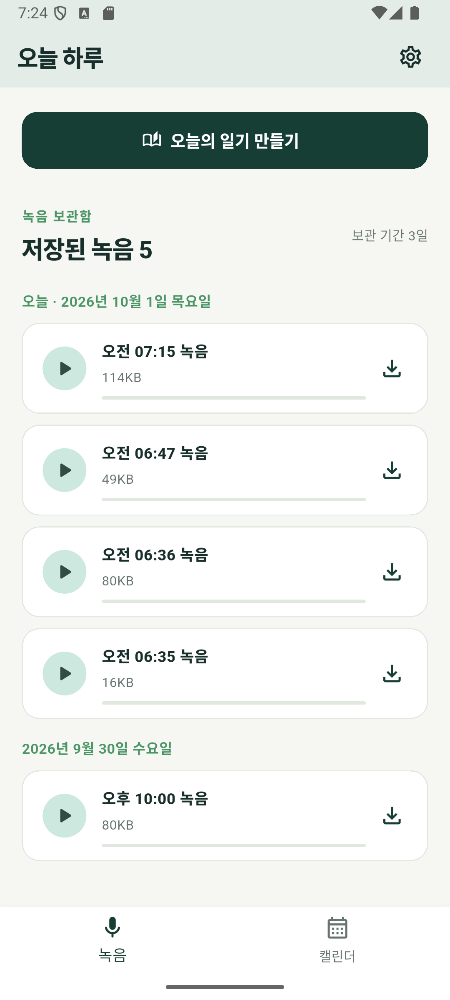
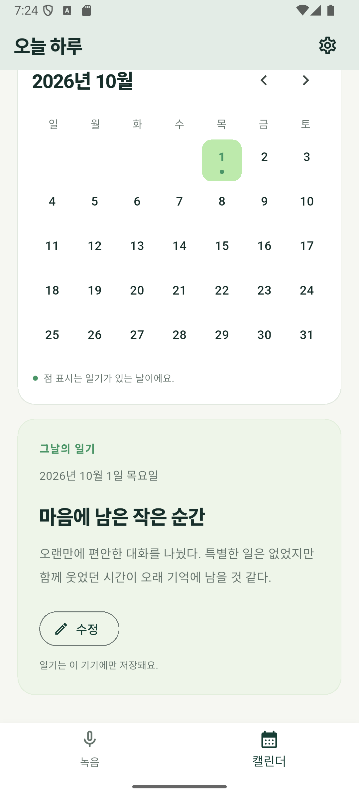
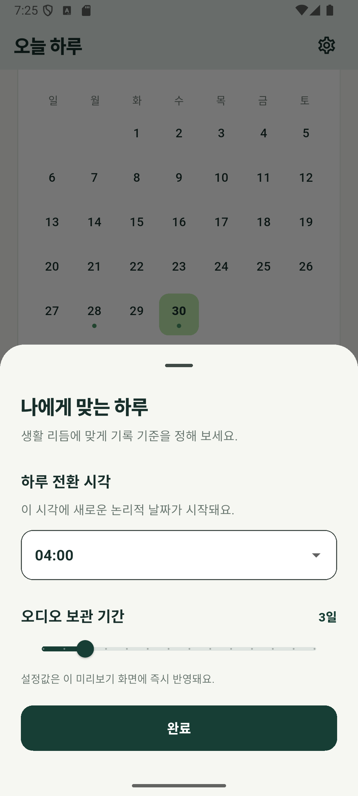
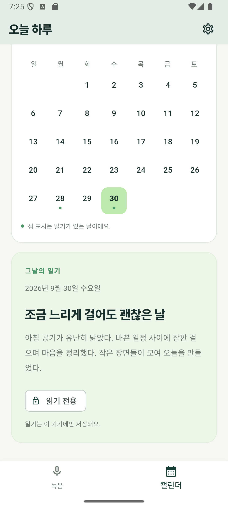

녹음하고 다시 듣기
마이크 권한을 허용하고 녹음 시작·중지만 누르면 녹음이 보관함에 쌓여요. 보관함에서 바로 재생하거나, 파일 앱의 다운로드 폴더로 내보낼 수 있어요.
지금 앱에서 실제로 동작하는 기능입니다.
마이크 권한을 허용하고 녹음 시작·중지만 누르면 녹음이 보관함에 쌓여요. 보관함에서 바로 재생하거나, 파일 앱의 다운로드 폴더로 내보낼 수 있어요.
밤 9시부터 다음 날 아침 9시 사이에서 하루가 넘어가는 시각을 정해요. 자정이 지난 새벽 녹음도 보관함에서 어제 하루로 묶여요.
녹음을 1~14일(기본 1일) 동안 보관해요. 기간이 지난 녹음은 앱을 실행할 때 자동으로 삭제돼요.
오늘 녹음이 있으면 일기 초안을 만들어 저장해요. 지금 초안은 녹음 내용이 아닌 예시 문장으로 채워져요.
일기는 그 논리적 날짜 안에서만 고칠 수 있어요. 하루가 지나면 읽기 전용으로 잠겨 그대로 보존돼요.
일기가 저장된 날짜에만 점이 찍혀요. 날짜를 누르면 그날의 일기를 바로 볼 수 있어요.
Android 에뮬레이터에서 캡처한 앱 화면입니다. 일기 내용은 예시 문장이에요.




Play 스토어를 거치지 않고 APK 파일로 직접 설치해요.
app-release.apk예요.개발 중인 앱이라 아직 연결되지 않은 기능이 있어요.
회원가입도, 로그인도, 서버도 없어요. 녹음과 일기, 설정은 모두 휴대폰의 앱 저장소에만 저장되고, 앱은 마이크 외에 인터넷 권한을 요청하지 않아요. 앱을 삭제하면 저장된 기록도 함께 지워져요.